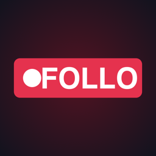

FolloПідтримка
Питання, помилки, побажання — пишіть на bohdan.loiko@gmail.com або в Telegram @bohdanloiko. Відповідаємо українською та англійською.
Якщо ефір не стартує
- Увімкніть трансляції на каналі: youtube.com/features → «Трансляції». Уперше YouTube вмикає їх до 24 годин.
- Канал має бути підтверджений номером телефону.
- Перевірте мобільний інтернет: для 1080p потрібно ≈ 7 Мбіт/с відправки, для 720p — ≈ 3.
Як надіслати лог
Follo → ⚙︎ Налаштування → Додаток → «Надіслати лог розробнику» → оберіть пошту чи месенджер. У лозі немає паролів чи токенів — лише технічні події трансляції.
Екран Google «застосунок не перевірено»
Поки Follo проходить перевірку Google, при підключенні YouTube може з'явитись це попередження. Натисніть «Додатково» → «Перейти до Follo».
English. Questions or problems: bohdan.loiko@gmail.com. To send a log: Settings → App → “Send the log to the developer”.